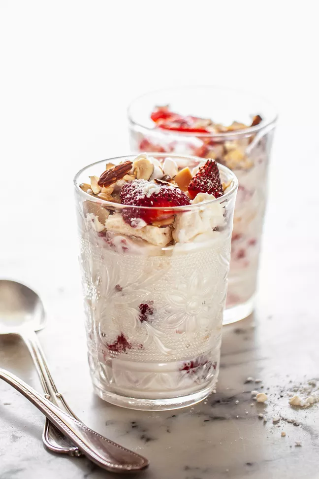

Strawberry Eton Mess
Make this practically instant dessert for a sweet treat for spring or summer months. Fold nuggets of store-bought meringues into whipped cream and strawberries, then spoon it into glass dishes. So pretty, and no one will suspect how dead easy it is.

This ultra-easy berry dessert with a funny name consists of a mixture of juicy macerated strawberries, broken pieces of meringue, and whipped cream.
This is a beloved sweet treat throughout England as soon as strawberries are in season.
One bite tells you why. Soft clouds of unsweetened whipped cream envelop crunchy sweet chunks of broken meringue and barely sweetened strawberries. What could go wrong? As it turns out: nothing! With only 6 ingredients and 15 minutes of your time, this is a dessert you’ll want to make for any lazy summer meal.
Ingredients
- 1/4 cup sliced almonds
- 1 pint strawberries, hulled and sliced
- 1 tablespoon strawberry jam
- 2 ounces store-bought meringues (broken into pieces, totaling roughly 3 cups)
- 1 cup heavy cream
- 1/2 teaspoon vanilla
Steps
- Toast the almonds:
Preheat the oven to 350°F. Spread the almonds on a baking sheet and bake for 8 to 10 minutes, or until fragrant and golden. Cool the almonds on the baking sheet.
If you don’t want to turn on the oven, toast the almonds in a dry skillet (no oil) over medium heat. Stir constantly for 4 to 5 minutes, or until the nuts are lightly browned. Immediately transfer them to a plate to cool, since they can easily burn if you don’t watch them.
- Crush half the strawberries with the jam:
Set aside some strawberry slices to garnish the finished dessert with.
In a medium bowl, toss half the strawberries with the jam. Using a potato masher or a fork, crush them coarsely. Let sit while you whip the cream.
Set the other half of the strawberries aside—everything will be mixed into the whipped cream.
- Whip the cream, but not too firmly:
In a mixer bowl, combine the cream and vanilla. Beat until soft peaks begin to form. Once the cream is thickened halfway, use a wire whisk to beat it by hand to the desired consistency. The cream should be thickened but still soft and loose.
- Fold the berries into the cream:
Add the crushed strawberries and the sliced strawberries to the bowl of cream and mix to swirl them in.
- Assemble the Eton mess and serve:
In the bottom of 4 (8-ounce) serving glasses or bowls, place a spoonful of the strawberries and cream mixture. Top with a spoonful of broken meringue pieces. Continue to layer the strawberries and cream and the broken meringues into the dishes.
Top with toasted almonds and reserved strawberry slices and serve.